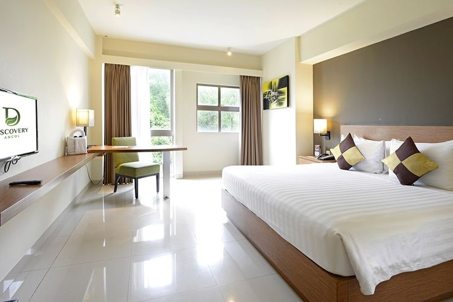

Bagi wisatawan yang ingin bermalam di area Ancol Beach dapat memilih penginapan yang tersedia. Berbagai tipe penginapan mulai dari villa, hotel, maupun resort dapat menjadi pilihan wisatawan.
Penginapan-Penginapan tersebut berlokasi di kawasan pantai dan area sekitarnya yang cukup dekat dengan pantai. Kebnyakan menawarkan pemandangan langsung ke arah laut lepas di garis pantai ancol Beach. Di sekitar penginapan telah banyak tersedia cafe, restaurant, dan penunjung pariwisata lainnya.